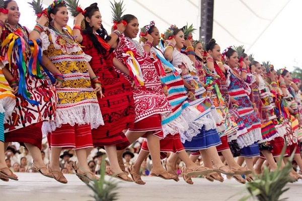
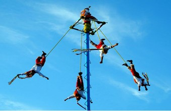
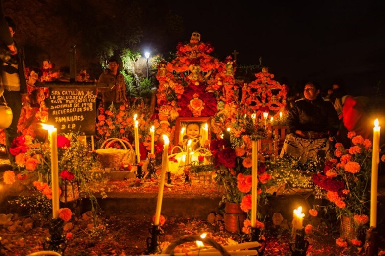

Se celebra en el estado de Oaxaca. Esta es una típica celebración mixta, en la que las muestras de danzas tradicionales se mezclan con la música, los trajes típicos y la gastronomía mexicana
Es un ritual que se realiza desde hace cientos de años como un medio de comunicarse con los dioses e invocar la lluvia en tiempos de sequías
Es una celebración popular mexicana para honrar a los difuntos. Tiene lugar el día 2 de noviembre, aunque se empieza a celebrar desde el día primero. ... El ritual tiene como objeto honrar y celebrar la vida de los antepasados, de los muertos queridos y de los muertos ejemplarea
